⌕
Louvor
Plataforma do Louvor
Igreja Amor e Vida
IGREJA AMOR E VIDA
Adore. Conecte-se.
Viva o propósito.
Um ambiente pensado para o ministério de louvor acessar músicas com rapidez e organização, em uma plataforma que visa o servir com excelência.
0Músicas
0Repertórios
0Favoritas
0Tons
Biblioteca ativa
0
áudios disponíveis
Tags0
Pastas0
Escala mensal
Escala Louvor Ávida — Maio 2026
| Data | Ministro | Back | Back | Back | Baixo | Bateria | Guitarra | Teclado | Tec. Som |
|---|
Observações:
- As canções devem ser definidas pelo ministro com antecedência mínima de 7 dias.
- O repertório de quinta deve ser definido até na quinta da semana anterior.
- O repertório de domingo deve ser definido até no domingo da semana anterior.
- Os horários dos ensaios serão:
- Domingos às 16:00H
- Quintas-feiras às 18:45h
Uniforme do culto
Paleta de Cores
Sugestões visuais para o ministrante definir o uniforme do culto com unidade, organização e identidade da Igreja Amor e Vida.
Igreja Amor e Vida
Escolha uma paleta e compartilhe com a equipe como referência visual do culto.
Preto e branco podem ser usados como alternativa em todas as paletas.
Links rápidos das artes
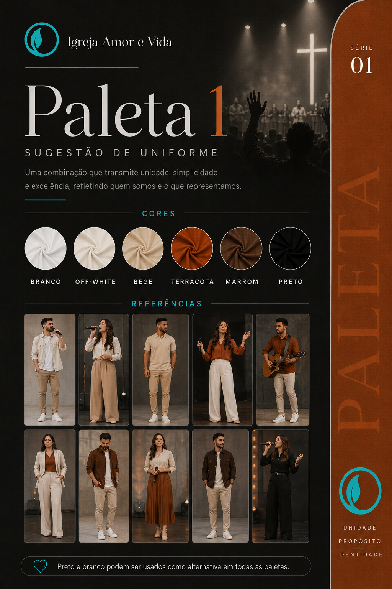
Paleta 1
Branco, off-white, bege, terracota, marrom e preto.
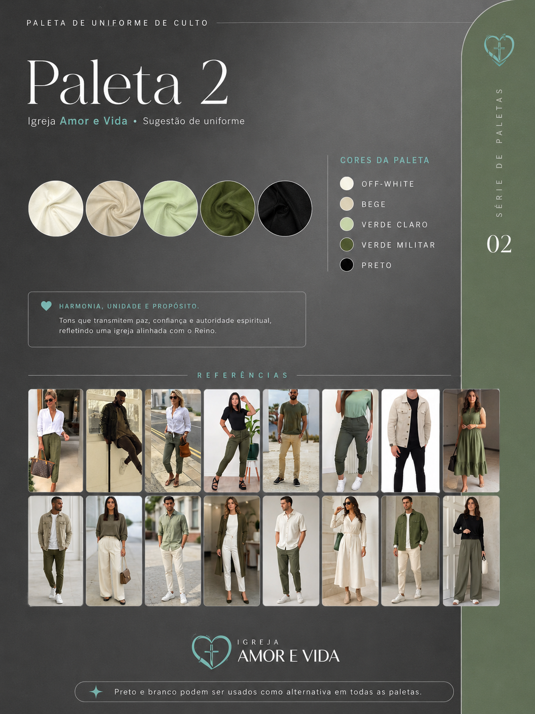
Paleta 2
Off-white, bege, verde claro, verde militar e preto.
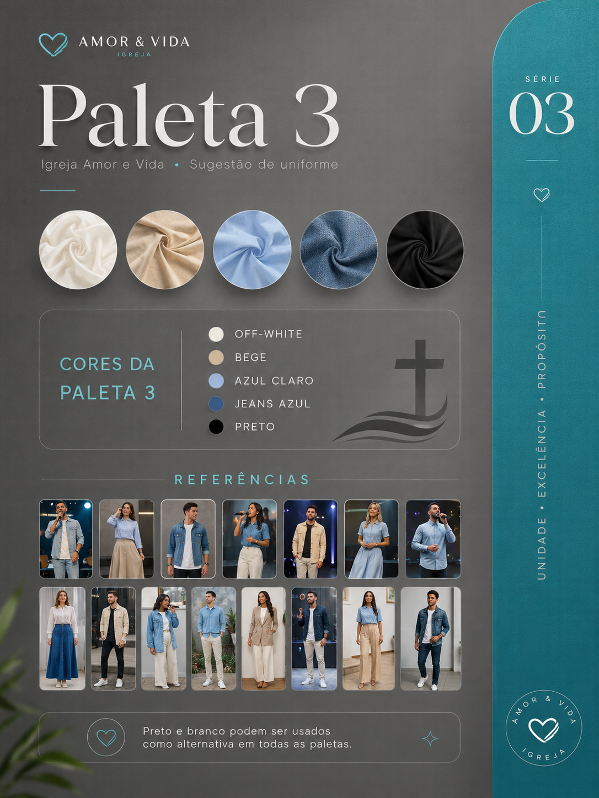
Paleta 3
Off-white, bege, azul claro, jeans azul e preto.
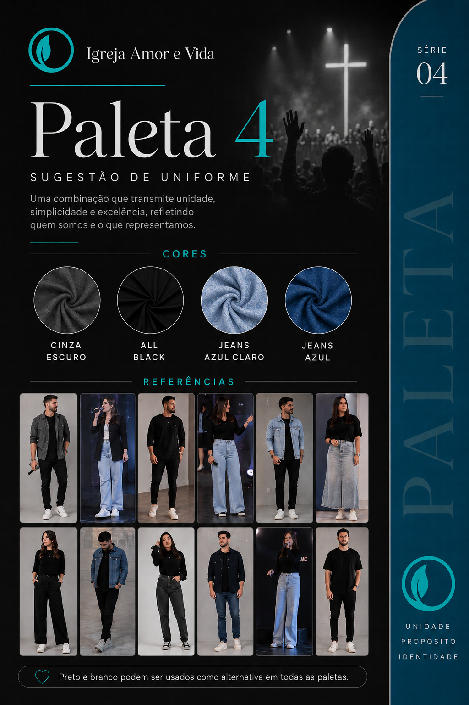
Paleta 4
Cinza escuro, all black, jeans azul claro e jeans azul.
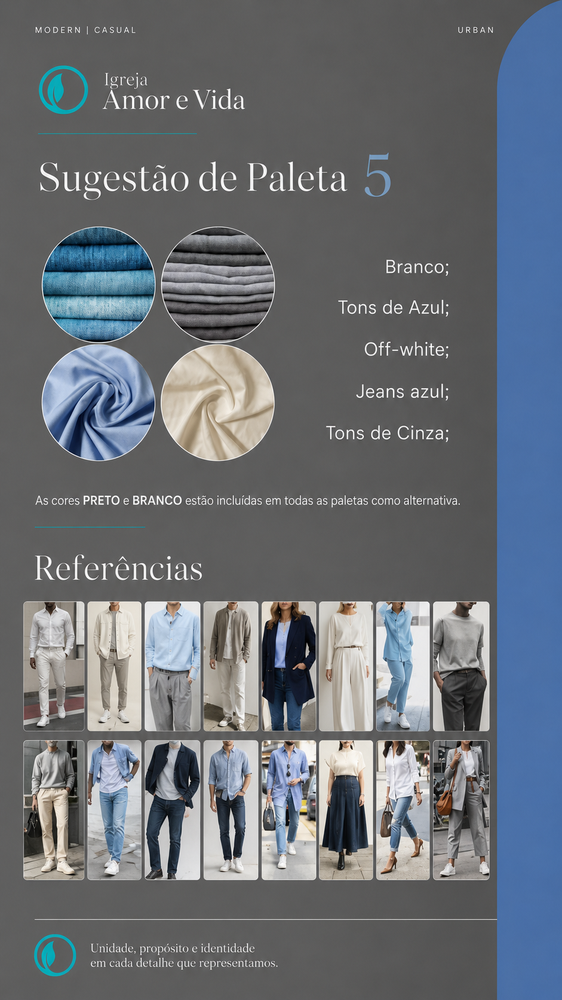
Paleta 5
Branco, tons de azul, off-white, jeans azul e tons de cinza.
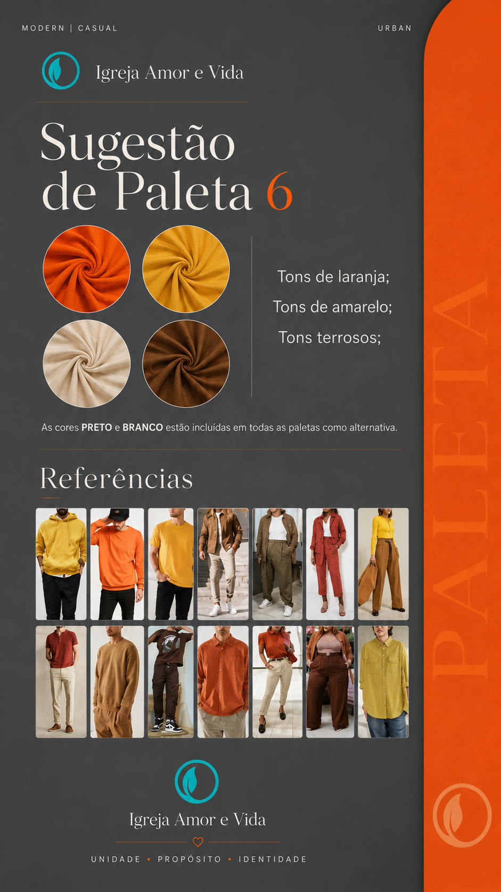
Paleta 6
Tons de laranja, tons de amarelo e tons terrosos.
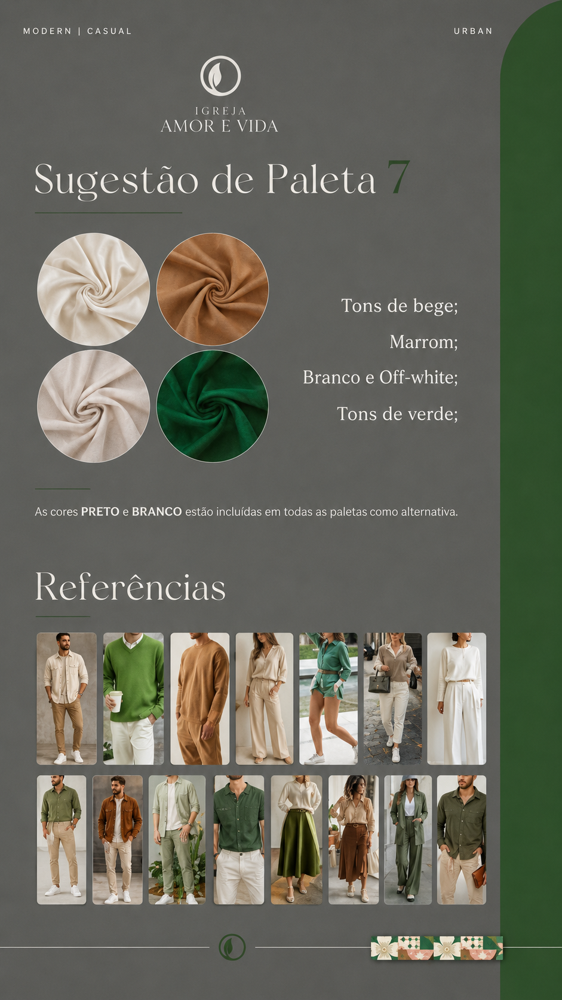
Paleta 7
Tons de bege, marrom, branco e off-white, com tons de verde.
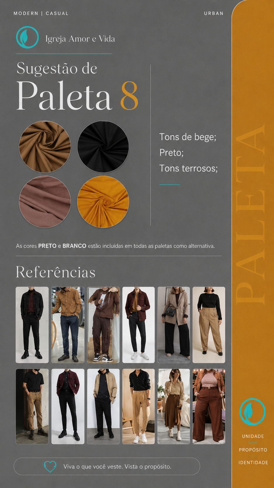
Paleta 8
Tons de bege, preto e tons terrosos.
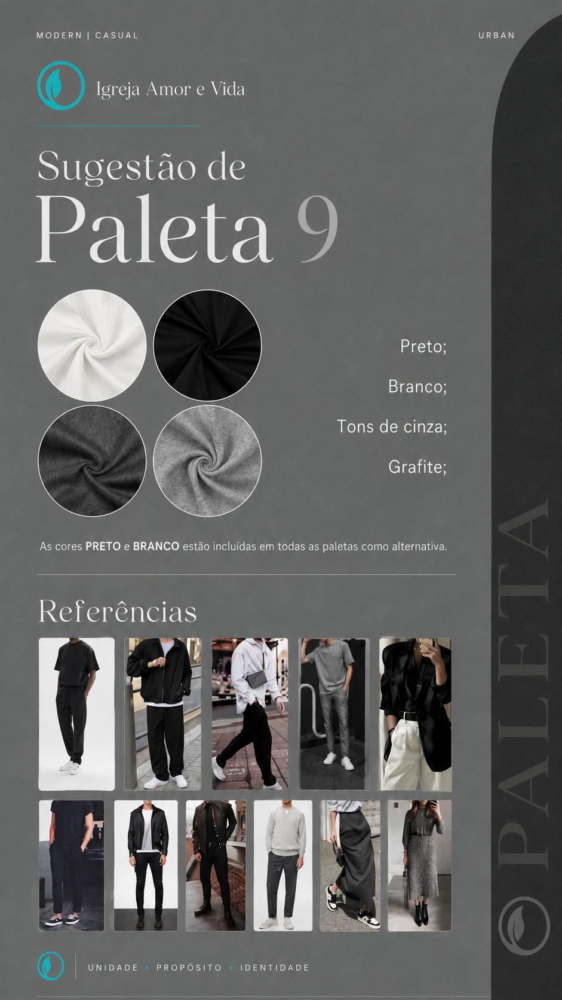
Paleta 9
Preto, branco, tons de cinza e grafite.
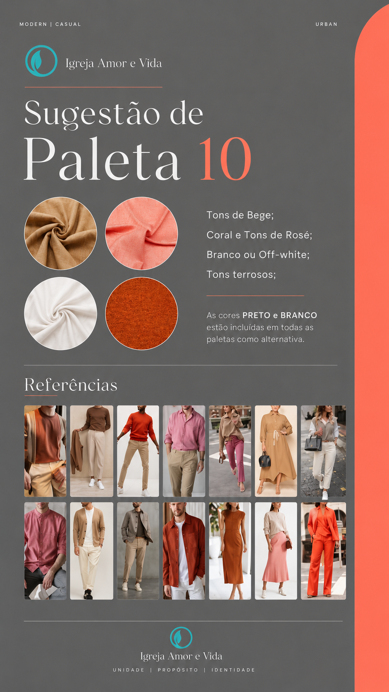
Paleta 10
Tons de bege, coral e tons de rosé, branco ou off-white, com tons terrosos.
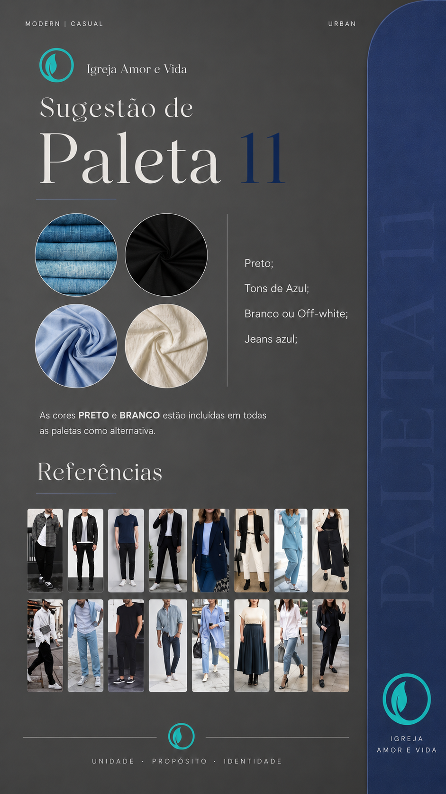
Paleta 11
Preto, tons de azul, branco ou off-white e jeans azul.
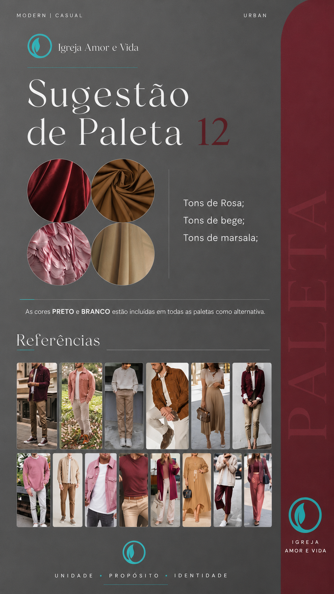
Paleta 12
Tons de rosa, tons de bege e tons de marsala.
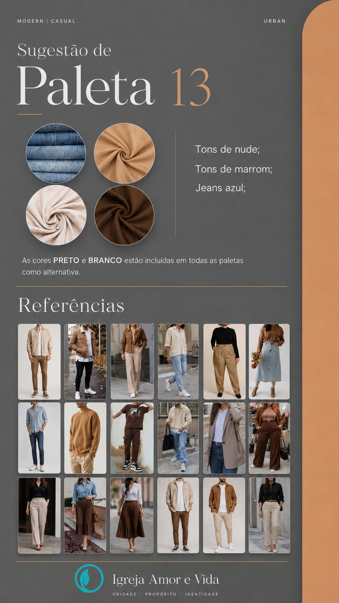
Paleta 13
Tons de nude, tons de marrom e jeans azul.
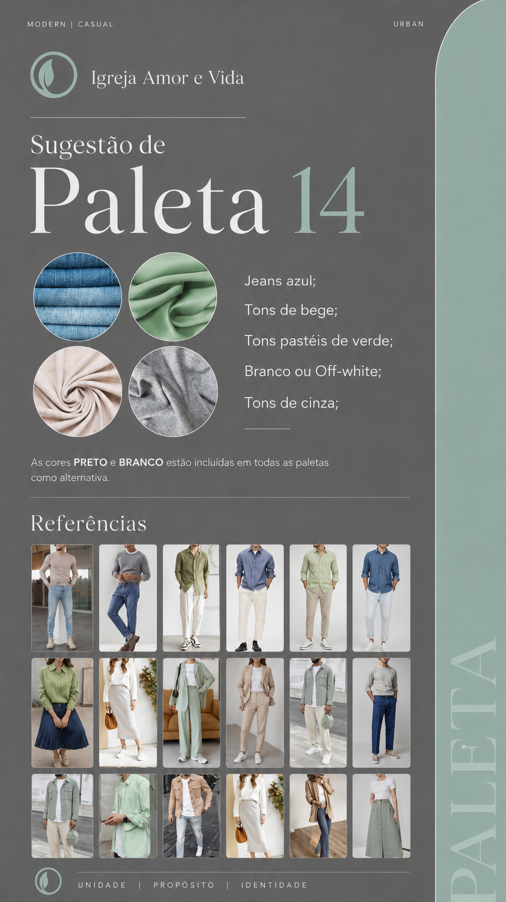
Paleta 14
Jeans azul, tons de bege, tons pastéis de verde, branco ou off-white e tons de cinza.
Cultos
Repertórios por culto
Inteligência do louvor
Histórico e notificações
Músicas mais tocadas
Tons mais usados
Últimas atividades
Notificações da equipe
Refinamento
Carregando...
Filtros inteligentes
Guia de uso
Tutorial da plataforma
Um resumo prático para a equipe acessar músicas com velocidade, organização e segurança durante o culto.
1. Encontrar a música certa⌕
Use a busca do topo e os filtros para localizar a música por nome, tom, tag, tipo de arquivo ou texto do nome original.
2. Escolher o melhor modo de visualização▦
Alterne entre Miniaturas e Detalhes. O sistema carrega mais músicas automaticamente conforme você rola a tela.
3. Tocar, favoritar e alterar tom♬
Toque a música, favorite para acesso rápido e abra a transposição para ouvir ou baixar em outro tom.
4. Montar repertórios por culto☷
Adicione músicas aos repertórios e, se a música estiver transposta, o repertório salva essa versão sem alterar o original da base.
5. Usar o player premium▶
Controle fila, progresso, volume e navegação no player inferior com foco em uso rápido no ensaio e no culto.
Biblioteca
Músicas
Role para carregar mais músicas